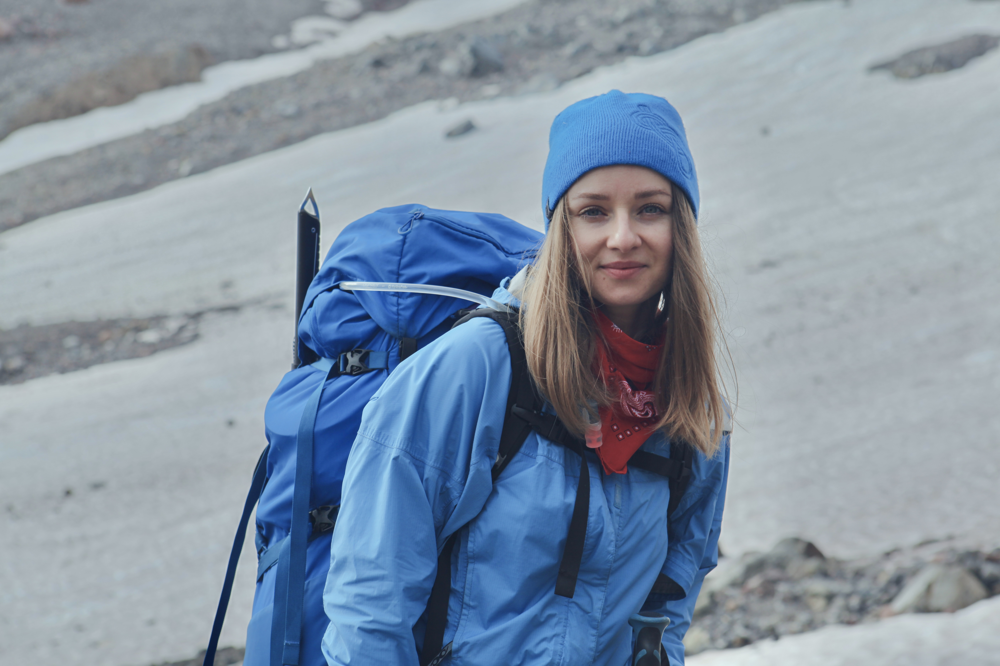
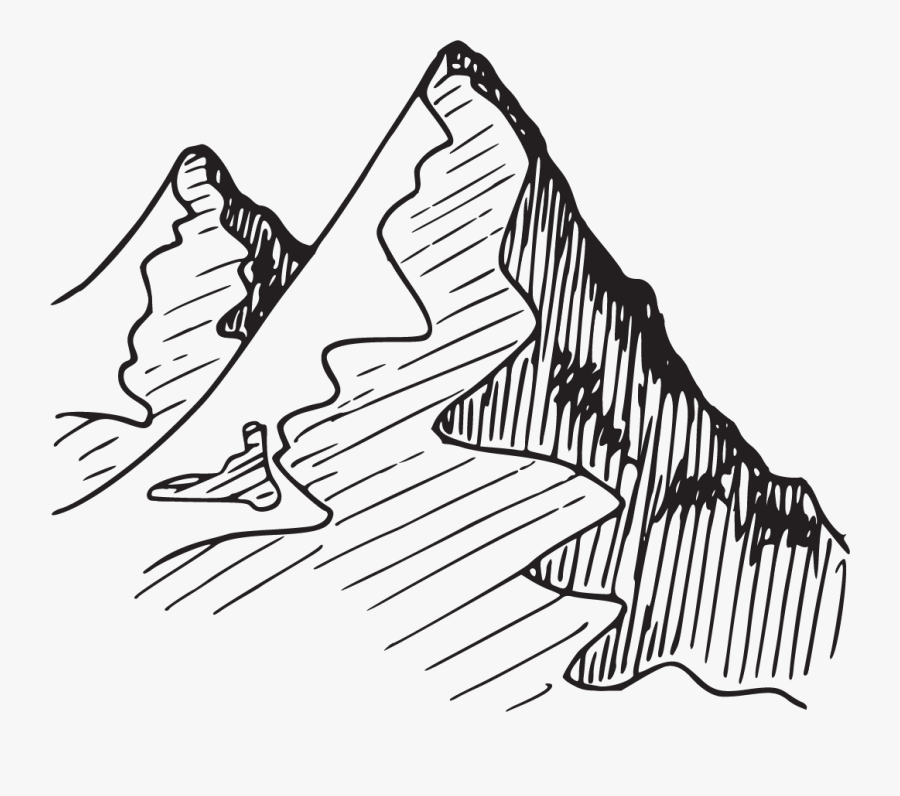
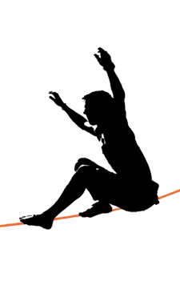

Elena Talanova
My week at Epicodus
Here are some things I've created during my first week at school:
- My first webpages about favorite places, people and things
- 5 new pages practicig floats, div and spans and box-modeling
- One page about Rock Climbing as my lifetime hobby
Shortly about myself
I am a Ukrainian girl, 29 years old, who moved to USA 5 years ago. I came here alone and have started my life from scratch in this wonderful place calle Pacific North West, learning english, culture, laws and life itself. In Ukraine I got a Masters degree in journalism (studied Slavic languages) and worked at the city local TV-channels, creating daily news. Since I moved to US I foun my linguistic skills absolutely useless in term of providing decent living conditions, so I've decided to challenge myself and change my career path drastically. During last couple years living in Seattle I made many friends in tech field and they all seemd like very intelligent and fun personalities to be around. The more I was watching them code, the more I was curious about how this system works and here I am, finally decided to go there and learn it myself.
My Hobbies
I am very much outdoorsy person and I enjoy exploring US West Coast. Here are my favorite sports:
Rock climbing
Snowboarding

Mountaineering 
Slacklining 
I am also fond of videography, therefore gained some editing skills in it. I mainly assemble short movies about my travel adventures using Adobe Premier Pro.